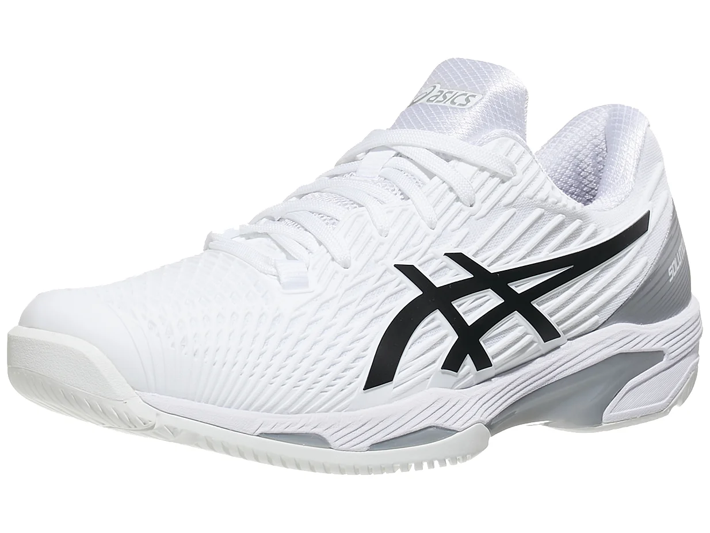

Asics Solution Speed FF 2 White/Black Men's Shoes

There are a plethora of lightweight, speed-oriented performance shoes on
the market, but not many can do what the Solution Speed FF 2 does! It
remains light while still maintaining a high level of support, plus
cushioning for the most aggressive movers. The FlyteFoam midsole
provides a smooth, plush ride while the Twisstruss system helps with
stability for ultra-aggressive lateral cuts. One key improvement our
testers found was the Flexion Fit upper material which contours to the
foot better than before making movement seamless. Durability has been
improved with added protection to the medial side for hard court
sliders. The outsole provides a nice blend of grip, while not feeling
overly sticky, catering to speedy players, like Alex de Minaur, who
slide into their shots on gritty hard courts.
Buy it here
Back to list
Home